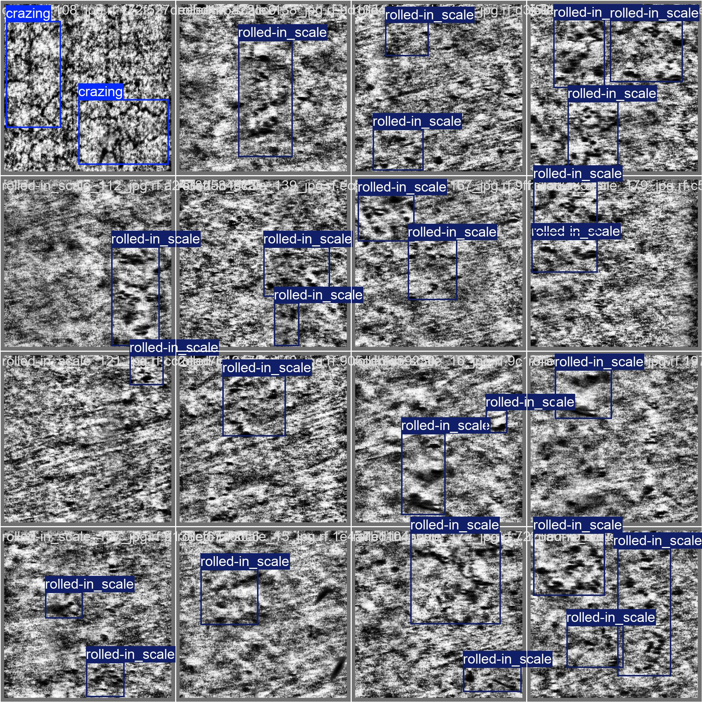
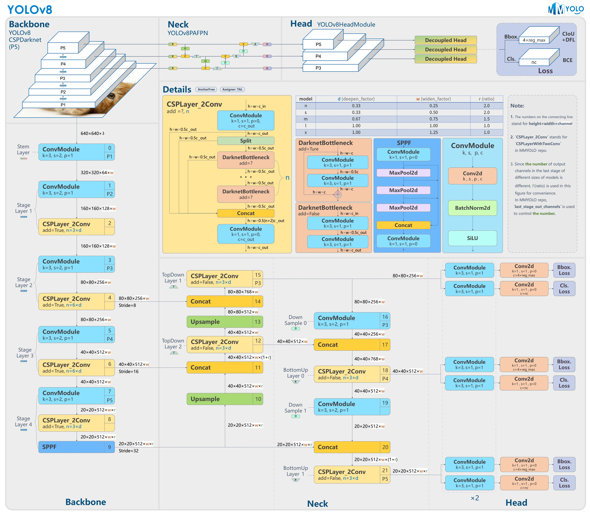
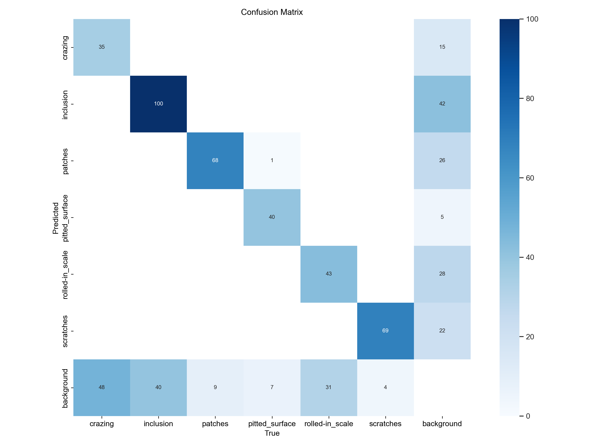
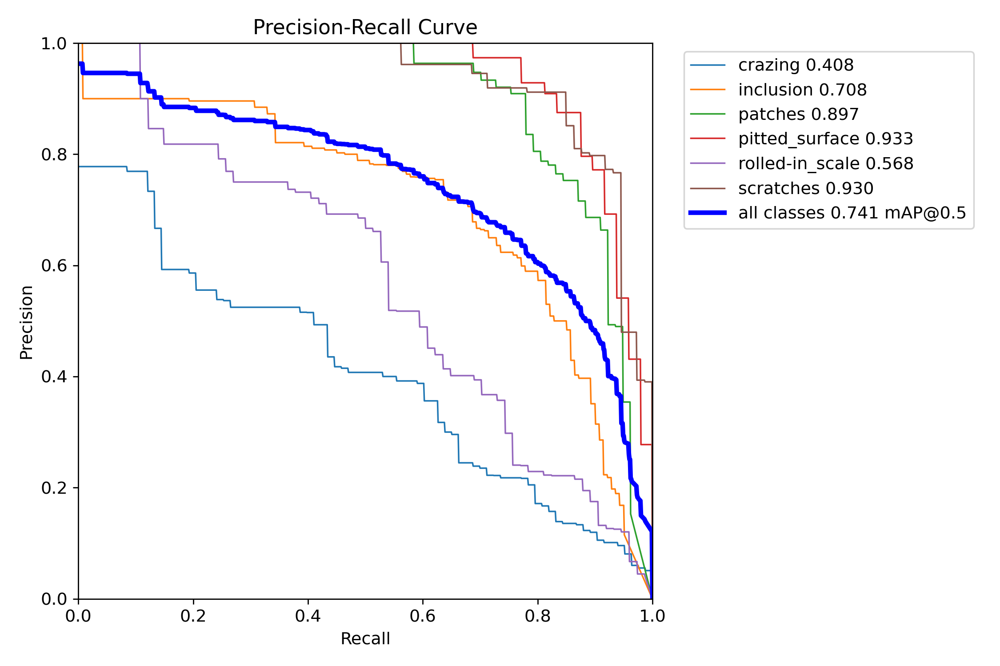
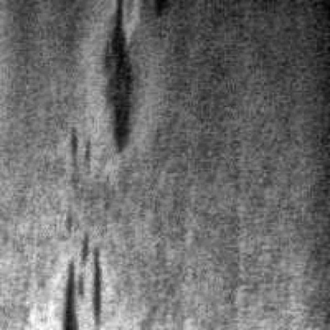

工业表面缺陷检测：YOLOv8 从训练到 NPU 部署
冷轧钢板表面的裂纹、夹杂、麻点，人眼盯两小时就开始漏检 —— 本实验用 NEU-DET 六类钢材缺陷数据集训练 yolov8n，把 mAP50=0.732 的检测器经 RKNN int8 量化搬进 RK3576 的 NPU，跑出板端 13 FPS 的实时缺陷检测，完整打通"letterbox 预处理 → 张量推理 → 反缩放画框"的工业级推理链路。
01问题引入：钢板裂纹靠人眼抓太慢
钢铁厂质检线上，冷轧钢板以每秒数米的速度通过，质检员要在 0.1 秒内辨认出表面六种缺陷：裂纹（crazing）、夹杂（inclusion）、斑块（patches）、麻点（pitted_surface）、氧化皮压入（rolled-in_scale）、划痕（scratches）。人眼疲劳后漏检率肉眼可见地上升，而每一块漏检的缺陷钢板流入冲压车间，可能就是一整批汽车零件的报废。
02通俗原理：检测器是怎样"看图圈框"的
生活比喻：把 YOLOv8 想成一个"先撒网、再筛鱼"的渔夫。整张图被切成密密麻麻的小格子（预设锚框区域），网络对每个位置一口气预测三件事：① 这里框的中心在哪、框多大（回归四个偏移量）；② 框里有东西的概率（objectness）；③ 是六种缺陷中哪一种（80 类通道在本任务里是 6 类）。回归就像不断微调鱼网位置直到套住鱼；最后的 NMS（非极大值抑制）像质检组长：几十个框都圈中同一条裂纹时，只留置信度最高的那个，重叠太多的全划掉。
图像逐层下采样，浅层学"这里有条细线"，深层学"这是裂纹不是划痕"。
深层语义与浅层位置信息来回输送 —— 大斑块和小麻点各取所需。
DFL（分布焦点损失）把框边界预测成概率分布，输出 9 个张量分三层。
score_thr=0.25 过弱信号，iou_thr=0.45 砍重叠框，逐类独立执行。
03关联知识点
| 知识点 | 在本实验中的角色 | 何时深入 |
|---|---|---|
| 图像是数字矩阵 | 1600×200×3 的 uint8 数组，一切变换都是矩阵运算 | EXP-03 色彩空间 |
| BGR vs RGB | OpenCV 读图是 BGR，YOLO 训练用 RGB，推理前必须 [:, :, ::-1] 翻转 | EXP-02 分类全错案例 |
| 量化 int8 / w8a8 | float32 模型压缩 4 倍换 NPU 整数加速，用 200 张校准图逼近原分布 | RKNN 官方量化文档 |
| IoU 与 NMS | 两框重叠面积 / 并集面积，>0.45 判重复 | EXP-07 跟踪的匈牙利匹配 |
| mAP50 | IoU≥0.5 时各类 AP 的均值，本模型 0.732 | 第 08 节 eval_map |
04实验目标
- 理解 YOLOv8 三层输出张量结构，能手算 9 输出 = 3 层 × [box64, cls6, obj1] 的通道含义
- 掌握 letterbox 预处理与反缩放后处理，能解释 pad 偏移导致的"框整体跑偏"
- 完成
defect_yolov8n_int8.rknn在 RK3576 NPU 上的加载与推理 - 用
eval_map.py分别以 rknn / onnx 后端评测 mAP，并说明两者为何不可直接对比 - 调通 MJPEG 视频流，在浏览器实时观看 13 FPS 缺陷检测画面
05实验环境与准备
RK3576 NPU（NPU ABI 6/8 核心池），USB 摄像头 / 样例图片，局域网 AP 模式。
PC 端转换工具 rknn-toolkit2，板端 rknnlite 运行时；模型 accelerate 目录内就位。
crazing / inclusion / patches / pitted_surface / rolled-in_scale / scratches，按 8:1:1 划分。
mAP50=0.732，P=0.657，R=0.706；int8 量化后精度略降、速度倍增。
# 目录就位（板端） cd ~/vision/01_defect_detection ls models/ defect_yolov8n_int8.rknn defect_yolov8n.onnx ls images/ ; # 1.jpg … 测试样例
06原理动画：letterbox → NPU → 反缩放画框
动起来看一帧图的完整旅程：原图等比缩放进 640 方框（灰边 pad=114）→ NHWC uint8 直喂 NPU → 三层输出各出候选框 → NMS 去重 → 坐标反缩放回原图画框。注意灰边：它记录了逆变换需要的偏移量。
07互动讲解：score_thr / iou_thr 调参实验台
两个阈值是检测器出门前的最后一道闸门。拖动滑块模拟一段产线推理，观察漏检与误检的此消彼长：
08实操步骤：跑通检测与 mAP 评测
# ① 单图推理（images/1.jpg） python src/app.py --model models/defect_yolov8n_int8.rknn \ --image images/1.jpg --save out.jpg scratches 0.82 [x1,y1,x2,y2] patches 0.71 ... saved: out.jpg # ② 实时摄像头 + MJPEG（浏览器打开 :8080） python src/app.py --model models/defect_yolov8n_int8.rknn --ros http://<board-ip>:8080/defect.mjpg ~13 FPS # ③ mAP 评测：同一权重、两种后端 python src/eval_map.py --backend rknn # 板上 int8 实测 python src/eval_map.py --backend onnx # PC float32 基准 mAP50 ≈ 0.732（onnx）· rknn int8 略降属量化正常损耗 # ④ ROS2 相机模式（可选，另开终端先起相机） ros2 launch ascamera hp60c.launch.py python src/app.py --model models/defect_yolov8n_int8.rknn --ros
类别 置信度 [x1,y1,x2,y2]；类名来自训练集的 yaml（六类英文名）。板端帧率低时可用 --core_mask 指定 NPU 核心组，避免与其他实验的 RKNN 实例抢核。🛠️ 指导书步骤截图（实验指导书 · 4 图）




✅ 实验现象截图（实验指导书 · 1 图）

09重点与易错点
| ⚠️ 常见坑 | 现象 → 解法 |
|---|---|
| pad=0 与训练不一致 | 框纵向系统性偏移 → 预处理用与训练一致的 letterbox，pad 步长 32 |
| BGR/RGB 颠倒 | 框对但分类置信度暴跌、颜色特征类全错 → NPU 前 BGR→RGB |
| 输入维度错误 | input got 3dims, expect 4dims → 升维成 [1,H,W,3] |
| 核心模式不支持 | core mode not supported → 换 core_mask 取值（0=AUTO） |
| ONNX 输出对不上 | 非 9 输出无法遛通后处理 → 确认导出为 3 层输出的 yolov8n |
| MJPEG 404 | 浏览器打不开 → 确认端口 8080 与流名 defect.mjpg |
| --ros 无帧 | 一直黑屏 → 先 ros2 topic hz 确认相机话题在发，设同一 ROS_DOMAIN_ID |
| mAP 数字打架 | rknn 与 onnx 不一致就喊"掉点了" → 量化有损耗属正常，同后端才可比 |
- 能画出 9 输出张量的结构图并说出每层通道含义
- 单图、实时流、mAP 评测三条链路全部跑通
- 能口头解释：训练 mAP50=0.732 与 rknn 评测差异的合理范围
- 把 score_thr 改成 0.6 看过漏检效果，恢复默认 0.25
10总结与思考
单图 → 实时流 → mAP 评测三条链路全通。
letterbox 互逆变换、9 输出结构、逐类 NMS。
int8 量化加载、core_mask、eval_map 双后端对比。
漏检（断裂风险）代价高于误检，score_thr 应偏向召回。